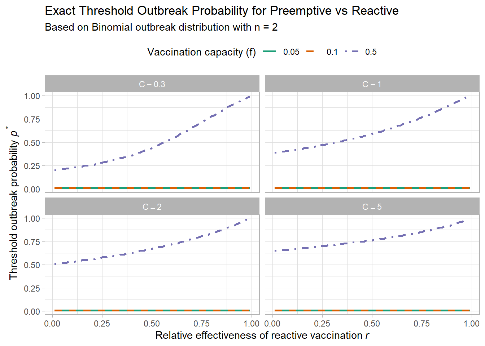

from sympy import symbols, Eq, solve, simplify# Define symbolsp, C, D, r = symbols('p C D r', positive=True)# Total cost of each strategycost_pre = C + p * Dcost_react = (2*p - p**2)*C + (2*p*(1- p)*(1- r) + p**2*(2- r)) * D# Set inequality: preemptive better than reactiveineq = Eq(cost_pre, cost_react)# Solve for threshold pp_thresh = solve(ineq, p)# Simplify solutionsimplified_thresh = [simplify(expr) for expr in p_thresh]# Outputfor i, expr inenumerate(simplified_thresh):print(f"Threshold p solution {i+1}:")print(expr)
library(ggplot2)library(dplyr)# Parametersr_vals <-seq(0.01, 0.99, by =0.01)p_vals <-seq(0.01, 0.99, by =0.01)D <-1C_vals <-c(0.3, 1, 2, 5)# Create evaluation gridgrid <-expand.grid(p = p_vals, r = r_vals, C = C_vals) %>%mutate(# Total cost for each strategycost_pre = C + p * D,cost_react = (2* p - p^2) * C + (2* p * (1- p) * (1- r) + p^2* (2- r)) * D,decision =ifelse(cost_pre < cost_react, "preemptive", "reactive") )# Threshold lines: where cost_pre == cost_reactthreshold_lines <- grid %>%group_by(C, r) %>%summarise(p_thresh =approx(cost_pre - cost_react, p, xout =0)$y,.groups ="drop" ) %>%filter(!is.na(p_thresh))# Labels for each facetlabels_df <-data.frame(C =rep(C_vals, each =2),label =rep(c("preemptive", "reactive"), 4),r =rep(0.05, 8),p =rep(c(0.95, 0.05), 4))ggplot(grid, aes(x = r, y = p)) +geom_line(data = threshold_lines, aes(x = r, y = p_thresh, group = C), color ="black", linewidth =1, inherit.aes =FALSE) +scale_y_continuous(limits=c(0,1))+scale_x_continuous(limits=c(0,1))+geom_text(data =data.frame(C =rep(C_vals, each =2),label =rep(c("preemptive", "reactive"), 4),r =rep(0.05, 8),p =rep(c(0.95, 0.05), 4)),aes(x = r, y = p, label = label), hjust =0, color ="black", size =4, inherit.aes =FALSE) +scale_fill_manual(values =c("preemptive"="steelblue", "reactive"="tomato")) +facet_wrap(~C, labeller =label_bquote(D/C == .(D/C))) +labs(title ="vaccination trategy eecision with threshold",x =expression("relative effectiveness of reactive strategy"~italic(r)),y =expression("outbreak probability"~italic(p)),fill ="Strategy" ) +theme_light() +theme(legend.position ='top')
Warning: No shared levels found between `names(values)` of the manual scale and the
data's fill values.
2.4 Compare single and two population scenarios
Code
grid1 <-expand.grid(p = p_vals, r = r_vals, C = C_vals) %>%mutate(# Total cost for each strategycost_pre = C,cost_react = p * (C + (1- r)*D),decision =ifelse(cost_pre < cost_react, "preemptive", "reactive") )grid2 <-expand.grid(p = p_vals, r = r_vals, C = C_vals) %>%mutate(# Total cost for each strategycost_pre = C + p * D,cost_react = (2* p - p^2) * C + (2* p * (1- p) * (1- r) + p^2* (2- r)) * D,decision =ifelse(cost_pre < cost_react, "preemptive", "reactive") )# Combine gridsgrid1 <- grid1 %>%mutate(scenario ="Single population")grid2 <- grid2 %>%mutate(scenario ="Two populations")grid_all <-bind_rows(grid1, grid2)# Threshold lines: compute for each scenariothreshold_lines <- grid_all %>%group_by(scenario, C, r) %>%summarise(p_thresh =approx(cost_pre - cost_react, p, xout =0)$y,.groups ="drop" ) %>%filter(!is.na(p_thresh))# Labels for plot interpretationlabels_df <-expand.grid(C = C_vals, scenario =c("Single population", "Two populations")) %>%mutate(label =rep(c("preemptive", "reactive"), times =4),r =0.05,p =rep(c(0.95, 0.05), times =4) )# Plot# Plotggplot() +geom_line(data = threshold_lines, aes(x = r, y = p_thresh, color = scenario, linetype = scenario, group =interaction(scenario, C)),linewidth =1) +geom_text(data = labels_df, aes(x = r, y = p, label = label), hjust =0, color ="black", size =4, inherit.aes =FALSE) +scale_color_manual(values =c("Single population"="steelblue", "Two populations"="tomato")) +scale_linetype_manual(values =c("Single population"="solid", "Two populations"="dashed")) +scale_x_continuous(limits =c(0, 1)) +scale_y_continuous(limits =c(0, 1)) +facet_wrap(~C, labeller =label_bquote(D/C == .(D/C))) +labs(title ="Vaccination Strategy Thresholds by Scenario and Campaign Cost",x =expression("Relative effectiveness of reactive strategy"~italic(r)),y =expression("Outbreak probability"~italic(p)),color ="Scenario",linetype ="Scenario" ) +theme_light() +theme(legend.position ="top")
2.5 Multiple populations (\(n>2\)) scenario
We consider \(n\) populations where each has probability \(p\) of an outbreak. We can afford to vaccinate a fraction \(f\) of them, pre-emptively or reactively.
Let:
\(n\): number of populations
\(p\): outbreak probability
\(f\): fraction of populations we can vaccinate
\(C\): vaccination cost per population
\(D\): outbreak cost (if unmitigated)
\(r\): relative effectiveness of reactive vaccination (\(0 < r < 1\))
2.6 Strategy 1: Preemptive Vaccination
We preemptively vaccinate \(fn\) populations. If an outbreak occurs in the \((1 - f)n\) unvaccinated group, we pay \(D\).
Total expected cost:
\[
\text{Cost}_{\text{pre}} = fn \cdot C + (1 - f)np \cdot D
\]
2.9 Decision Thresholds for Preemptive vs Reactive (Multiple Populations)
We compute and plot threshold outbreak probability \(p^*\) at which preemptive vaccination becomes cheaper than reactive, under various vaccination cost levels \(C\) and vaccination capacity levels \(f\).
Code
library(ggplot2)library(dplyr)# Parametersr_vals <-seq(0.01, 0.99, by =0.01)p_vals <-seq(0.01, 0.99, by =0.01)D <-1C_vals <-c(0.3, 1, 2, 5)f_vals <-c(0.05, 0.1, 0.5)n <-100# or any fixed valuegrid_all <-expand.grid(p = p_vals, r = r_vals, C = C_vals, f = f_vals) %>%mutate(cost_pre = n * (f * C + (1- f) * p * D),covered =pmin(p, f),uncovered =pmax(p - f, 0),cost_react = n * (covered * (C + (1- r) * D) + uncovered * D),decision =ifelse(cost_pre < cost_react, "preemptive", "reactive") )# Compute threshold lines: p where cost_pre == cost_reactthreshold_lines <- grid_all %>%group_by(C, f, r) %>%summarise(p_thresh =approx(cost_pre - cost_react, p, xout =0)$y,.groups ="drop" ) %>%filter(!is.na(p_thresh))
Warning: There were 20 warnings in `summarise()`.
The first warning was:
ℹ In argument: `p_thresh = approx(cost_pre - cost_react, p, xout = 0)$y`.
ℹ In group 35: `C = 0.3`, `f = 0.05`, `r = 0.35`.
Caused by warning in `regularize.values()`:
! collapsing to unique 'x' values
ℹ Run `dplyr::last_dplyr_warnings()` to see the 19 remaining warnings.
Code
# Plot with threshold lines colored by fggplot(threshold_lines, aes(x = r, y = p_thresh, color =factor(f), linetype =factor(f))) +geom_line(linewidth =1) +facet_wrap(~C, labeller =label_bquote(C == .(C))) +scale_color_manual(values =c("0.05"="#1b9e77", "0.1"="#d95f02", "0.5"="#7570b3")) +scale_linetype_manual(values =c("0.05"="solid", "0.1"="dashed", "0.5"="dotdash")) +scale_y_continuous(limits =c(0, 1)) +scale_x_continuous(limits =c(0, 1)) +labs(title ="Threshold Outbreak Probability for Preemptive vs Reactive Strategy",subtitle ="Multiple population scenario with varying vaccination capacity f",x =expression("Relative effectiveness of reactive vaccination"~italic(r)),y =expression("Threshold outbreak probability"~italic(p^"*")),color ="Vaccination capacity (f)",linetype ="Vaccination capacity (f)" ) +theme_light() +theme(legend.position ="top")
Code
# Exact cost computation for given parameterscompute_exact_costs <-function(n, p, C, D, r, f) { k <-floor(f * n) # number of populations we can vaccinate probs <-dbinom(0:n, size = n, prob = p)# Preemptive: vaccinate k populations before outbreaks cost_pre <-sum( probs * (k * C + (1- f) * (0:n) * D) # Expected outbreak cost: only in unvaccinated )# Reactive: respond to up to k outbreaks after detection cost_react <-sum( probs *ifelse(0:n <= k, (0:n) * (C + (1- r) * D), # All outbreaks mitigated k * (C + (1- r) * D) + (0:n - k) * D # Only k mitigated, rest unmitigated ) )list(pre = cost_pre, react = cost_react)}find_threshold_p <-function(n, r, C, D, f, p_grid =seq(0.01, 0.99, by =0.01)) {for (p in p_grid) { costs <-compute_exact_costs(n, p, C, D, r, f)if ((costs$pre - costs$react) <0) {return(p) # First p where preemptive is cheaper } }return(NA)}# Parametersn <-2# try 2 to compare with two-pop figurer_vals <-seq(0.01, 0.99, by =0.01)C_vals <-c(0.3, 1, 2, 5)f_vals <-c(0.05, 0.1, 0.5)D <-1# Grid of all thresholdsthresholds <-expand.grid(C = C_vals, f = f_vals, r = r_vals) %>%rowwise() %>%mutate(p_thresh =find_threshold_p(n = n, r = r, C = C, D = D, f = f) ) %>%ungroup()ggplot(thresholds, aes(x = r, y = p_thresh, color =factor(f), linetype =factor(f))) +geom_line(linewidth =1) +facet_wrap(~C, labeller =label_bquote(C == .(C))) +scale_color_manual(values =c("0.05"="#1b9e77", "0.1"="#d95f02", "0.5"="#7570b3")) +scale_linetype_manual(values =c("0.05"="solid", "0.1"="dashed", "0.5"="dotdash")) +labs(title ="Exact Threshold Outbreak Probability for Preemptive vs Reactive",subtitle =paste("Based on Binomial outbreak distribution with n =", n),x =expression("Relative effectiveness of reactive vaccination"~italic(r)),y =expression("Threshold outbreak probability"~italic(p^"*")),color ="Vaccination capacity (f)",linetype ="Vaccination capacity (f)" ) +theme_light() +theme(legend.position ="top")
Warning: Removed 1 row containing missing values or values outside the scale range
(`geom_line()`).

Code
library(ggplot2)library(dplyr)# --- Parameters ---r_vals <-seq(0.01, 0.99, by =0.01)p_vals <-seq(0.01, 0.99, by =0.01)D <-1C_vals <-c(0.3, 1, 2, 5)f_vals <-c(0.4) # exact overlay for f = 0.5n <-20# exact enumeration for n = 2# --- Function: exact expected cost given outbreak count ---compute_exact_costs <-function(n, p, C, D, r, f) { k <-floor(f * n) x_vals <-0:n probs <-dbinom(x_vals, size = n, prob = p)# Preemptive: vaccinate k units, pay outbreak cost only for (1 - f) cost_pre <-sum(probs * (k * C + (1- f) * x_vals * D))# Reactive: cover up to k outbreaks after detection cost_react <-sum(probs *ifelse( x_vals <= k, x_vals * (C + (1- r) * D), k * (C + (1- r) * D) + (x_vals - k) * D ))list(pre = cost_pre, react = cost_react)}# --- Function: Find p* threshold where preemptive becomes better ---find_threshold_p <-function(n, r, C, D, f, p_grid =seq(0.01, 0.99, by =0.01)) {for (p in p_grid) { costs <-compute_exact_costs(n, p, C, D, r, f)if ((costs$pre - costs$react) <0) {return(p) } }return(NA)}# --- Compute threshold p* for each (r, C) using exact method ---threshold_exact <-expand.grid(C = C_vals, f = f_vals, r = r_vals) %>%rowwise() %>%mutate(p_thresh =find_threshold_p(n = n, r = r, C = C, D = D, f = f) ) %>%ungroup() %>%mutate(method ="Exact (n = 2)", f =factor(f))# --- Load two-population approximation for comparison ---grid2 <-expand.grid(p = p_vals, r = r_vals, C = C_vals) %>%mutate(cost_pre = C + p * D,cost_react = (2* p - p^2) * C + (2* p * (1- p) * (1- r) + p^2* (2- r)) * D )threshold_two_pop <- grid2 %>%group_by(C, r) %>%summarise(p_thresh =approx(cost_pre - cost_react, p, xout =0)$y,.groups ="drop" ) %>%filter(!is.na(p_thresh)) %>%mutate(method ="Two population approx", f =factor(0.5))# --- Combine and plot ---threshold_combined <-bind_rows(threshold_exact, threshold_two_pop)ggplot(threshold_combined, aes(x = r, y = p_thresh, color = method, linetype = method)) +geom_line(linewidth =1) +facet_wrap(~C, labeller =label_bquote(C == .(C))) +scale_color_manual(values =c("Exact (n = 2)"="#1b9e77", "Two population approx"="#d95f02")) +scale_linetype_manual(values =c("Exact (n = 2)"="solid", "Two population approx"="dashed")) +scale_y_continuous(limits =c(0, 1)) +scale_x_continuous(limits =c(0, 1)) +labs(title ="Threshold Outbreak Probability for Preemptive vs Reactive (f = 0.5)",subtitle ="Comparison between exact enumeration for n = 2 and two-population approximation",x =expression("Relative effectiveness of reactive vaccination"~italic(r)),y =expression("Threshold outbreak probability"~italic(p^"*")),color ="Method",linetype ="Method" ) +theme_light() +theme(legend.position ="top")
Warning: Removed 1 row containing missing values or values outside the scale range
(`geom_line()`).
2.10 Asymptotic Limit: Preemptive vs Reactive
As the number of populations \(n \to \infty\) and vaccination capacity fraction \(f \to 0\) (i.e., resources are extremely limited), the expected costs for preemptive and reactive strategies simplify.
Let:
\(p\): probability of an outbreak per population,
\(r\): relative effectiveness of reactive vaccination,
\(C\): cost of one vaccination campaign,
\(D\): cost of one unmitigated outbreak,
\(fn\): number of populations we can afford to vaccinate (preemptively or reactively)
2.10.1 Preemptive Expected Cost
Total cost:
\[
\text{Cost}_{\text{pre}} = fn \cdot C + (1 - f)np \cdot D
\]
If \(r < p\): preemptive is cheaper (\(\Delta < 0\))
If \(r > p\): reactive is cheaper (\(\Delta > 0\))
Thus, in the limit:
\[
p > r \quad \Rightarrow \quad \text{preemptive is preferred}
\]
This corresponds to the decision threshold line \(p^* = r\) as \(f \to 0\) and \(n \to \infty\).
Code
# Overlay limit line p = rggplot(threshold_combined, aes(x = r, y = p_thresh, color = method, linetype = method)) +geom_line(linewidth =1) +scale_y_continuous(limits=c(0,1))+geom_abline(slope =1, intercept =0, color ="black", linetype ="dotted", linewidth =0.8) +annotate("text", x =0.7, y =0.7, label ="p = r (limit)", angle =45, hjust =-0.1, vjust =1.2, size =3.5) +facet_wrap(~C, labeller =label_bquote(C == .(C))) +scale_color_manual(values =c("Exact (n = 2)"="#1b9e77", "Two population approx"="#d95f02")) +scale_linetype_manual(values =c("Exact (n = 2)"="solid", "Two population approx"="dashed")) +labs(title ="Threshold Outbreak Probability with Asymptotic Line p = r",subtitle ="Black dotted line shows p = r decision boundary as n → ∞ and f → 0",x =expression("Relative effectiveness of reactive vaccination"~italic(r)),y =expression("Threshold outbreak probability"~italic(p^"*")),color ="Method",linetype ="Method" ) +theme_light() +theme(legend.position ="top")
Warning: Removed 1 row containing missing values or values outside the scale range
(`geom_line()`).
2.11 Optimizing Hybrid Vaccination Strategy
2.11.1 Problem
Given a limited vaccination budget (or coverage fraction \(f\)), how should we split our efforts between preemptive and reactive vaccination strategies to minimize total expected cost?
We define:
\(\alpha \in [0, 1]\): fraction of vaccination resources used preemptively
\(1 - \alpha\): fraction used reactively
\(f\): total fraction of the population that can be vaccinated
\(n\): total number of populations
\(p\): probability of outbreak in each population
\(C\): cost of one vaccination campaign
\(D\): cost of one unmitigated outbreak
\(r\): relative effectiveness of reactive vaccination
2.12 Expected Cost Formula
The total expected cost of a hybrid strategy that uses \(\alpha\) of the vaccination capacity preemptively is:
Where: - \(x = (1 - \alpha f)np\): expected number of outbreaks in unvaccinated group - \(k_{\text{react}} = (1 - \alpha)fn\): number of reactive campaigns available
2.13 Visualizing Cost of Hybrid Strategy
We explore how the total expected cost varies with the fraction \(\alpha\) of vaccine budget used preemptively.
Code
library(ggplot2)library(dplyr)# Parameters (adjustable)f <-0.5# total vaccination capacityn <-100# number of populationsp <-0.3# outbreak probability per populationC <-1# cost of a vaccination campaignD <-5# cost of an unmitigated outbreakr <-0.4# relative effectiveness of reactive vaccination# Alpha grid: preemptive sharealpha_vals <-seq(0, 1, by =0.01)# Compute total cost for each alphacost_df <-data.frame(alpha = alpha_vals) %>%mutate(k_pre = alpha * f * n,k_react = (1- alpha) * f * n,x = (1- alpha * f) * n * p,covered =pmin(x, k_react),uncovered =pmax(x - k_react, 0),cost = k_pre * C + covered * (C + (1- r) * D) + uncovered * D )
Code
ggplot(cost_df, aes(x = alpha, y = cost)) +geom_line(color ="steelblue", linewidth =1.2) +geom_point(data = cost_df %>%slice_min(cost), aes(x = alpha, y = cost), color ="red", size =3) +annotate("text", x = cost_df$alpha[which.min(cost_df$cost)], y =min(cost_df$cost), label ="Minimum", hjust =-0.2, vjust =-1, color ="red") +labs(title =expression("Expected Total Cost of Hybrid Strategy vs "~ alpha),subtitle =paste0("Parameters: p = ", p, ", f = ", f, ", n = ", n, ", C = ", C, ", D = ", D, ", r = ", r),x =expression("Fraction of vaccine budget used preemptively"~ (alpha)),y ="Expected total cost" ) +theme_light()